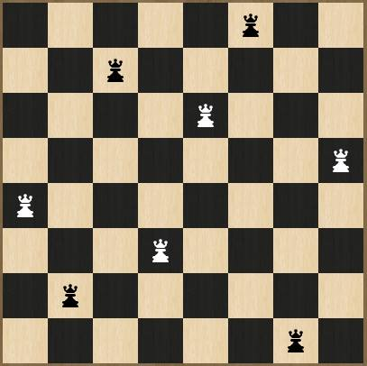

Genetic Algorithms (GAs) are adaptive methods which may be used to solve search and optimization problems. They are based on the genetic processes of biological organisms. Over many generations, natural populations evolve according to the principles of natural selection and "survival of the fittest", first clearly stated by Charles Darwin in The Origin of Species . By mimicking this process, genetic algorithms are able to "evolve" solutions to real world problems, if they have been suitably encoded. For example, GAs can be used to design bridge structures, for maximum strength/weight ratio, or to determine the least wasteful layout for cutting shapes from cloth. They can also be used for on-line process control, such as in a chemical plant, or load balancing on a multi-processor computer system.
The basic principles of GAs were first laid down rigorously by Adaptation in Natural and Artificial Systems, and are well described in many texts (e.g. Genetic Algorithms and Simulated Annealing, Handbook of Genetic Algorithms, Genetic algorithms and their applications, etc.) GAs simulate those processes in natural populations which are essential to evolution. Exactly which biological processes are essential for evolution, and which processes have little or no role to play is still a matter for research; but the foundations are clear. In nature, individuals in a population compete with each other for resources such as food, water and shelter. Also, members of the same species often compete to attract a mate. Those individuals which are most successful in surviving and attracting mates will have relatively larger numbers of offspring. Poorly performing individuals will produce few of even no offspring at all. This means that the genes from the highly adapted, or "fit" individuals will spread to an increasing number of individuals in each successive generation. The combination of good characteristics from different ancestors can sometimes produce "super fit" offspring, whose fitness is greater than that of either parent. In this way, species evolve to become more and more well suited to their environment.
solution to a given problem. Each individual is assigned a "fitness score" according to how good a solution to the problem it is. For example, the fitness score might be the strength/weight ratio for a given bridge design. (In nature this is equivalent to assessing how effective an organism is at competing for resources.) The highly fit individuals are given opportunities to "reproduce", by "cross breeding" with other individuals in the population. This produces new individuals as "off spring", which share some features taken from each "parent". The least fit members of the population are less likely to get selected for reproduction, and so "die out".
A whole new population of possible solutions is thus produced by selecting the best individuals from the current "generation", and mating them to produce a new set of individuals. This new generation contains a higher proportion of the characteristics possessed by the good members of the previous generation. In this way, over many generations, good characteristics are spread throughout the population, being mixed and exchanged with other good characteristics as they go. By favoring the mating of the more fit individuals, the most promising areas of the search space are explored. If the GA has been designed well, the population will converge to an optimal solution to the problem.
The original eight queens problem consisted of trying to find a way to place eight queens on a chessboard so that no queen would attack any other queen. An alternate way of expressing the problem is to place eight “anythings” on an eight by eight grid such that none of them share a common row, column, or diagonal.
It has long been known that there are 92 solutions to the problem. Of these 92, there are 12 distinct patterns. All of the 92 solutions can be transformed into one of these 12 unique patterns using rotations and reflections.
The 12 basic solutions can be constructed using the following table. For example, if you are constructing solution number 1, then the Queen for chessboard row 1 should be placed in column 1, the Queen for row 2 should be placed in column 5, etc. A diagram showing solution number 1 appears below the table.
| Solution # | Elements show which column to use per chessboard row | |||||||
|---|---|---|---|---|---|---|---|---|
| Row 0 | Row 1 | Row 2 | Row 3 | Row 4 | Row 5 | Row 6 | Row 7 | |
| 1 | 0 | 4 | 7 | 5 | 2 | 6 | 1 | 3 |
| 2 | 0 | 5 | 7 | 2 | 6 | 3 | 1 | 4 |
| 3 | 1 | 3 | 5 | 7 | 2 | 0 | 6 | 4 |
| 4 | 1 | 4 | 6 | 0 | 2 | 7 | 5 | 3 |
| 5 | 1 | 4 | 6 | 3 | 0 | 7 | 5 | 2 |
| 6 | 1 | 5 | 0 | 6 | 3 | 7 | 2 | 4 |
| 7 | 1 | 5 | 7 | 2 | 0 | 3 | 6 | 4 |
| 8 | 1 | 6 | 2 | 5 | 7 | 4 | 0 | 3 |
| 9 | 1 | 6 | 4 | 7 | 0 | 3 | 5 | 2 |
| 10 | 2 | 4 | 1 | 7 | 0 | 6 | 3 | 5 |
| 11 | 2 | 4 | 7 | 3 | 0 | 6 | 1 | 5 |
| 12 | 2 | 5 | 1 | 4 | 7 | 0 | 6 | 3 |
If we rotate and reflect any solution so that the entry on row 1 is as far left as possible, then we can group solutions by this leftmost column. The above example is a “Column 1” solution. Of the 12 basic solutions, two are “Column 1” solutions, seven are “Column 2” solutions, and three are “Column 3” solutions.
As described above genetic algorithms work by applying “Natural Selection” to a population so that only the fittest in the population survive. In our implementation of the genetic algorithm members of the population are represented by “chromosome”s. Each chromosome is a possible board possession in the n queens game.
The board position is represented as a tuple of n numbers, where each number represents the position of the queen on the nth column. So the following board position is represented as (4,6,1,5,2,0,7,3). This representation ensures that in every chromosome there is no possibility for two queens to be on the same column.
These chromosomes in the population breed among each other and mutate until only the “fittest”, which in our case is the solution with least conflicts among the queens remain.
The program starts by creating a random population of chromosomes for a size specified by us. Each random chromosome is created so that it has no two queens in the same row to avoid introducing faulty chromosomes to the population. This is done using the following function.
def random(cls, num_queens=8):
chromosome = [i for i in range(num_queens)]
random.shuffle(chromosome)
return cls(chromosome)
As each row number only appears once in the chromosome no two queens are on the same row.
At each iteration, the chromosomes breed among each other. We select two random chromosomes from the population and combines the two of them by “breeding”. This breeding function act as follows
def fromParents(cls, parent_one, parent_two):
if (len(parent_one) != len(parent_two)):
return "Error"
if (parent_one == parent_two):
parent_two = Chromosome.random(len(parent_two))
possible = [i for i in range(len(parent_one))]
current = [-1 for i in range(len(parent_one))]
for i in range(len(parent_one)):
if(parent_one[i] == parent_two[i]):
current[i] = parent_one[i]
possible.remove(current[i])
for i in range(len(parent_one)):
if(current[i] == -1):
current[i] = random.choice(possible)
possible.remove(current[i])
return cls(current)
def mutate(self, mutation_prob = .001):
if (random.random() < mutation_prob ):
indexOne = random.randint(0,len(self)-1)
indexTwo = random.randint(0,len(self)-1)
temp = self.chromosome[indexOne]
self.chromosome[indexOne] = self.chromosome[indexTwo]
self.chromosome[indexTwo] = temp
At the end of each iteration the population is sorted according to how “fit” they are. The fitness of the chromosome is calculated using the number of conflicts in the board. This is calculated using the cost function.
def getCost(self):
cost = 0;
for i in range(len(self.chromosome)):
cost+=self.chromosome.count(self.chromosome[i]) - 1
cost+=self.getDiagonalCost(i)
return cost
def getDiagonalCost(self,index):
cost = 0
for i in range(len(self.chromosome)):
if(i != index):
delta_x = abs(index - i)
delta_y = abs(self.chromosome[index] - self.chromosome[i])
if(delta_x == delta_y):
cost= cost+1
return cost
The chromosome is considered fitted if the number of conflicts is the lowest. If the fittest chromosome is a solution the algorithm ends. If not the circle of n-queen life continues until a solution is found or the limit to iterations is reached.
 I'm sorry Dave, I can't let you do
that...
I'm sorry Dave, I can't let you do
that...